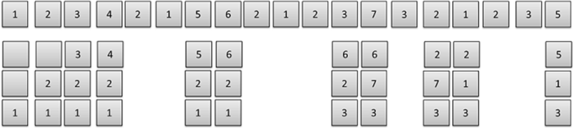

Introduction
. In optimal page replacement algorithm, the page that is not used for a long time in the future is replaced. Since this algorithm “looks” into the future this algorithm becomes practically impossible to implement in real life. But since this algorithm is near to perfect, it can be used as a benchmark to gauge other algorithms. This is the more optimal algorithm. Optimal page replacement algorithm has the least number of page faults.
Example:
Consider page reference string 1,2,3,4,2,1,5,6,2,1,2,3,7,3,2,1,2,3,5 with 3 page frames.Find number of page faults.
1) The first page reference comes for page 1 and since it is not available in the memory, reference to page 1 will result in page fault so we need to bring page 1 into the memory and for that we need to allocate free memory. Since we have total three free frames available, one of the free frame will be allocated to page 1.
2) Next page references are for page 2 and page 3 respectively and due to absence of that pages in the memory they will generate 2 page faults and we will allocate both free frames to page 2 and page 3 respectively.
3) After the page 3, next reference is for page 4 in the page reference string but now we don’t have any free frames so operating system has to take decision for ⦁ swapping using ⦁ page replacement algorithm. According to our optimal algorithm the page that has the reference far away in the reference string will be selected for the replacement so if we look future references of all the pages that are available in memory i.e. page 1, 2 and 3 we come to know that reference for page three is the far away that the references of page 1 and 2 so page 3 will be selected for replacement assuming that it will be required in future but not now. So page 3 will be replaced by page 4.
4) Next two references for page 2 and 1 are already available in the memory so no page fault will be generated so no replacement is required.
5) Note that the next reference is for page 5 and since it is not available in the memory again page fault will be generated. Looking to the page reference string for future references of pages 1, 2 and 4 respectively, we came to know that there is no future reference for page 4 in the page reference string so we are assuming that it is far away than the other pages present in the memory as in practical environment new requests keep arriving constantly so here page 4 will be the victim page for the replacement and it will be replaced by page 5.
6) After that next reference is for page 6 and it will be replaced by page 5 due to page fault. Since page 2 and 1 are already available in the memory, next three references for the page 2,1 and 2 no page fault will be generated.
7) Similarly all the page reference will be checked and where necessary, page replacement will be done after looking to their future reference depending on how far the reference for particular page is.
8) Notice the 16th page reference in the page reference string for page 2. At this point we have page 3, 7 and 6 in the memory and the absence of page 2 will result in new page fault. For the selection of victim page, we can notice that future references for page 6 and 7 could not be found in the page reference string so we can assume that their references might be far war and we since we have two such pages we can select either page 6 or page 7 but normally FIFO policy can be useful to break the tie.
9) The complete calculation of page faults are given on the above picture please refer to it. You can allocated free frames either from top or bottom. It does not affect the result.
